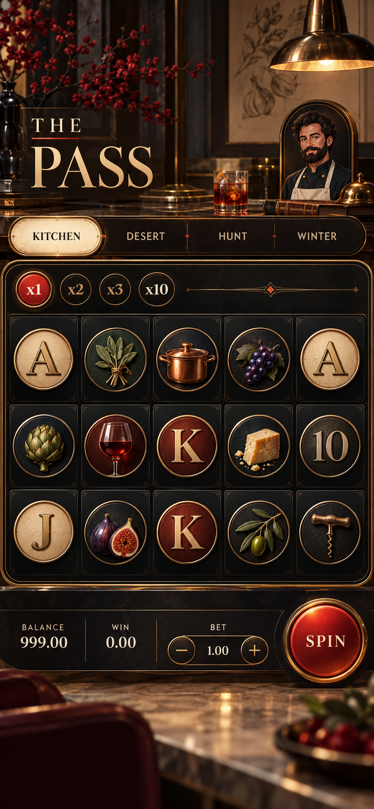
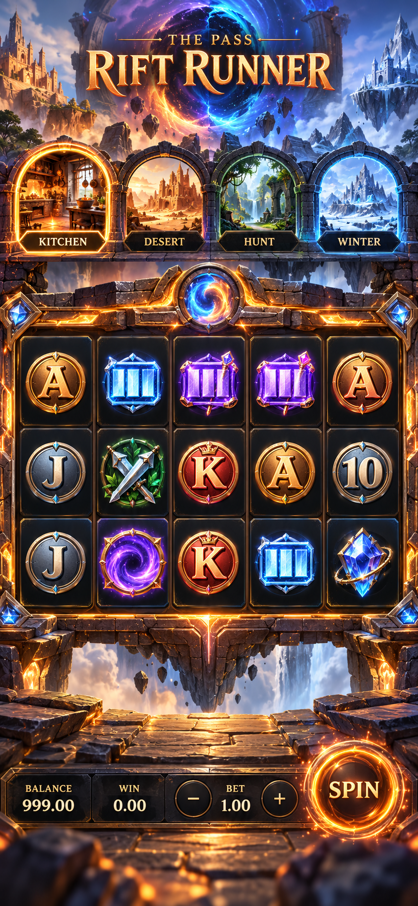
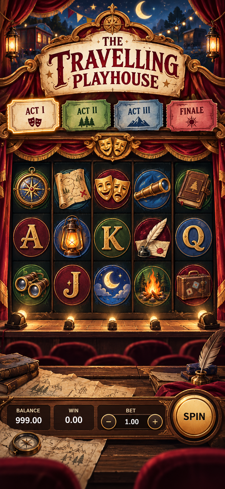

01
Outcome visibility is obstructed
The portrait character covers roughly a third of the reel board on mobile. Decorative art must never hide the result.
Design decision deck · 1 November 2026
A live audit of “The Pass,” three professional design directions, and a production-ready plan for motion, assets, performance, and accessibility.
Live product audit
The portrait character covers roughly a third of the reel board on mobile. Decorative art must never hide the result.
Title, background, symbols, and portrait do not arrive atomically. Visitors briefly see mixed themes and empty symbol wells.
Detailed symbols are repeatedly replaced by generic letter discs. Conflicting update and CSS cadences produce jitter instead of mass and inertia.
White-outline cartoon portraits, copper royal coins, purple line icons, and small clip-art characters use unrelated lighting, materials, and edge treatments.
Large PNGs appear progressively, leaving empty circles. Assets need compression, preloading, atlases, responsive sizes, and immutable cache headers.
No paytable, rules, sound settings, result summary, or clear multiplier explanation. Auto also needs jurisdiction-aware handling.
Native buttons, 44px targets, visible focus, aria-pressed, live balance/win values, and the existing prefers-reduced-motion branch are good foundations.

Direction 01
Restrained, luxurious, and credible: a private members’ club rather than a noisy arcade.

Direction 02
A cinematic, world-hopping portal game with the strongest trailer-like first impression.

Direction 03
A handcrafted theatre and illustrated adventure book: authored, memorable, and lighter than full WebGL.
Decision matrix
| Criterion | Midnight Atelier | Rift Runner | Travelling Playhouse |
|---|---|---|---|
| Professional polish | 5 / 5 | 5 / 5 | 4.5 / 5 |
| Distinctiveness | 4 / 5 | 4.5 / 5 | 5 / 5 |
| Mobile performance | 5 / 5 | 3 / 5 | 4.5 / 5 |
| Asset / animation cost | Medium | High | Medium |
| Accessibility complexity | Low | High | Medium |
| Time to strong MVP | Fastest | Slowest | Medium |
It directly fixes softness, inconsistent hierarchy, reel obstruction, and the scattered HUD with the lowest technical risk. Borrow one idea from the other directions: use Rift Runner’s transactional world transition and Playhouse’s tactile, authored symbol-set discipline.
Professional motion architecture
Animation should explain game state. It should never be a collection of independent looping effects.
no-store.Implementation roadmap
Benchmarks and evidence
The three images in this deck were generated with the built-in OpenAI image-generation tool. They are visual direction references, not final interface exports. Production UI should be built from native DOM/CSS/SVG/Rive/Pixi assets.
High-fidelity 390×844-style mobile slot UI; private-members-club mood; ink, parchment, brass, vermilion; unobstructed 5×3 reels; small editorial character cameo; clear four-chapter selector and thumb-zone control dock; restrained light sweep and tactile settle; no casino clichés or overlapping artwork.
High-fidelity 390×844-style cinematic portal slot UI; carbon, ember, molten gold, ice blue, ultraviolet; four world previews; unobstructed 5×3 reels; stable bottom control deck; energy-ring spin state and 2.5D parallax cues; avoid clutter, excessive bloom, and generic cyberpunk HUD styling.
High-fidelity 390×844-style handcrafted theatre/adventure-book slot UI; burgundy, bone, moss, cobalt, antique gold; four playbill tabs; unobstructed 5×3 proscenium reels; curtain-wipe, spotlight, stamped reward, and tile-settle cues; avoid scrapbook clutter and childish storybook styling.